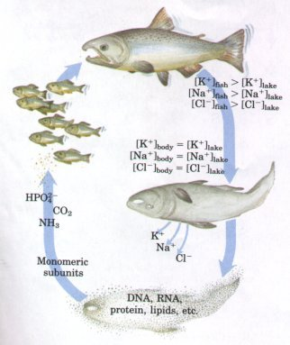
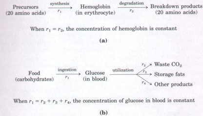
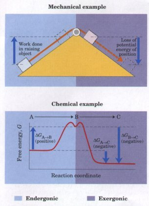

Energy is a central theme in
biochemistry: cells and organisms depend upon a constant
supply of energy to oppose the inexorable tendency in
nature for decay to the lowest energy state. The
synthetic: reactions that occur within cells, like the
synthetic processes in any factory, require the input of
energy. Energy is consumed in the motion of a bacterium
or an Olympic sprinter, in the flashing of a firefly or
the electrical discharge of an eel. The storage and
expression of information cost energy, without which
structures rich in information inevitably become
disordered and meaningless. Cells have evolved highly
efficient mechanisms for capturing the energy of
sunlight, or extracting the energy of oxidizable fuels,
and coupling the energy thus obtained to the many
energy-consuming processes they carry out. Organisms Are Never at Equilibrium with Their SurroundingsIn the course of biological evolution, one of the first developments must have been an oily membrane that enclosed the water-soluble molecules of the primitive cell, segregating them and allowing them to accumulate to relatively high concentrations. The molecules and ions contained within a living organism differ in kind and in concentration from those in the organism's surroundings. The cells of a freshwater fish contain certain inorganic ions at concentrations far different from those in the surrounding water (Fig. 1-4). Proteins, nucleic acids, sugars, and fats are present in the fish but essentially absent from the surrounding water, which instead contains carbon, hydrogen, and oxygen atoms only in simpler molecules such as carbon dioxide and water. When the fish dies, its contents eventually come to equilibrium with those of its surroundings. |
 Figure 1-4 Living organisms are not at equilibrium with their surroundings. Death and decay restore the equilibrium. During growth, energy from food is used to build complex molecules and to concentrate ions from the surroundings. When the organism dies, it loses its ability to derive energy from food. Without energy, the dead body cannot maintain concentration gradients; ions leak out. Inexorably, macromolecular components decay to simpler compounds. These simple compounds serve as nutritional sources for phytoplankton, which are then eaten by larger organisms. (By convention, square brackets denote concentration-in this case, of ionic species.) |
Although the chemical composition of an organism may be almost constant through time, the population of molecules within a cell or organism is far from static. Molecules are synthesized and then broken down by continuous chemical reactions, involving a constant flux of mass and energy through the system. The hemoglobin molecules carrying oxygen from your lungs to your brain at this moment were synthesized within the past month; by next month they will have been degraded and replaced with new molecules. The glucose you ingested with your most recent meal is now circulating in your bloodstream; before the day is over these particular glucose molecules will have been converted into something else, such as carbon dioxide or fat, and will have been replaced with a fresh supply of glucose. The amount of hemoglobin and glucose in the blood remains nearly constant because the rate of synthesis or intake of each just balances the rate of its breakdown, consumption, or conversion into some other product (Fig. 1-5). The constancy of concentration does not, therefore, reflect chemical inertness of the components, but is rather the result of a dynamic steady state.
 Organisms Exchange Energy and Matter with Their SurroundingsLiving cells and organisms must perform work to stay alive and to reproduce themselves. The continual synthesis of cellular components requires chemical work; the accumulation and retention of salts and various organic compounds against a concentration gradient involves osmotic work; and the contraction of a muscle or the motion of a bacterial flagellum represents mechanical work. Biochemistry examines the processes by which energy is extracted, channeled, and consumed, so it is essential to develop an understanding of the fundamental principles of bioenergetics. Consider the simple mechanical example shown in Figure 1-6. An object at the top of an inclined plane has a certain amount of potential energy as a result of its elevation. It tends spontaneously to slide down the plane, losing its potential energy of position as it approaches the ground. When an appropriate string-and-pulley device is attached to the object, the spontaneous downward motion can accomplish a certain amount of work, an amount never greater than the change in potential energy of position. The amount of energy actually available to do work (called the free energy) will always be somewhat less than the total change in energy, because some energy is dissipated as the heat of friction. The greater the elevation of the object relative to its final position, the greater the change in energy as it slides downward, and the greater the amount of work that can be accomplished. In the chemical analog of this mechanical example (Fig. 1-6, bottom), a reactant, B, is converted into a product, C. The compounds B and C each contain a certain amount of potential energy, related to the kind and number of bonds in each type of molecule. This energy is analogous to the potential energy in an elevated object. Some of the energy is available to do work when B is converted into C by a chemical reaction that involves no change in temperature or pressure. This portion of the energy, the free energy, is designated G (for J. Willard Gibbs, who developed much of the theory of chemical energetics), and the change in free energy during the conversion of B to C is ΔG. |
Figure
1-5 A dynamic steady state results when the
rate of appearance of a cellular component is exactly
matched by the rate of its disappearance. In (a), a
protein (hemoglobin) is synthesized, then degraded. In
(b), glucose derived from food (or from carbohydrate
stores) enters the bloodstream in some tissues
(intestine, liver), then leaves the blood to be consumed
by metabolic processes in other tissues (heart, brain,
skeletal muscle). In this scheme, rl, r2, etc., represent
the rates of the various processes. The dynamic
steady-state concentrations of hemoglobin and glucose are
maintained by complex mechanisms regulating the relative
rates of the processes shown here.  Figure 1-6 (Top) The downward motion of an object releases potential energy that can do work. The potential energy made available by spontaneous downward motion (an exergonic process, represented by the pink box) can be coupled to the upward movement of another object (an endergonic process, represented by the blue box). (Bottom) A spontaneous (exergonic) chemical reaction (B→C) releases free energy, which can pull or drive an endergonic reaction (A→B) when the two reactions share a common intermediate, B. The exergonic reaction B→C has a large, negative free-energy change (ΔGB→C), and the endergonic reaction A→B has a smaller, positive free-energy change (ΔGA→B). The free-energy change for the overall reaction A→C is the arithmetic sum of these two values (ΔGA→C). Because the value of ΔGA→C is negative, the overall reaction is exergonic and proceeds spontaneously. |
We can define a system as all of the reactants and products, the solvent, and the immediate atmosphere-in short, everything within a defined region of space. The system and its surroundings together constitute the universe. If the system exchanges neither matter nor energy with its surroundings, it is said to be closed. The magnitude of the free-energy change for a process proceeding toward equilibrium depends upon how far from equilibrium the system was in its initial state. In the mechanical example, no spontaneous sliding will occur once the object has reached the ground; the object is then at equilibrium with its surroundings, and the free-energy change for sliding along the horizontal surface is zero.
In chemical reactions in closed systems, the process also proceeds spontaneously until equilibrium is reached. The free-energy change (ΔG) for a chemical reaction is a quantitative expression of how far the system is from chemical equilibrium. Reactions that proceed with the release of free energy are exergonic, and because the products of such reactions have less free energy than the reactants, ΔG is negative. Chemical reactions in which the products have more free energy than the reactants are endergonic, and for these reactions ΔG is positive. When all of the chemical species in the system are at equilibrium, the free-energy change for the reaction is zero, and no further net conversion of reactants into products will occur without the input of energy or matter from outside the system.
As in the mechanical example, some of the energy released in a spontaneous process can accomplish work-chemical work in this case. In living systems, as in mechanical processes, part of the total energy change in the chemical reaction is unavailable to accomplish work. Some is dissipated as heat, and some is lost as entropy, a measure of energy due to randomness, which we will define more rigorously later.
How is free energy from a chemical reaction channeled into energyrequiring processes in living organisms? In the mechanical example in Figure 1-6, it is clear that if one sliding object is coupled to another object on another inclined plane, the energy released by the spontaneous downward sliding of one may be harnessed to produce upward motion of the other, a motion that cannot occur spontaneously. This is a direct analogy to a biochemical process in which the energy released in an exergonic chemical reaction can be used to drive another reaction that is endergonic and would not proceed spontaneously. The reactions in this system are coupled because the product of one (compound B) is a reactant in the other. This coupling of an exergonic reaction with an endergonic one is absolutely central to the free-energy exchanges that occur in all living systems. In biological energy coupling, the simultaneous occurrence of two reactions is not enough. The two reactions must be coupled in the sense of Figure 1-6 (bottom); the two reactions share an intermediate, B.
A living organism is an open system; it exchanges both matter and energy with its surroundings. Living organisms use either of two strategies to derive free energy from their surroundings: (1) they take up chemical components from the environment (fuels), extract free energy by means of exergonic reactions involving these fuels, and couple these reactions to endergonic reactions; or (2) they use energy absorbed from sunlight to bring about exergonic photochemical reactions, to which they couple endergonic reactions.
Living organisms create and maintain their complex, orderly structures at the expense of free energy from their environment.
Exergonic chemical or photochemical reactions are coupled to endergonic processes through shared chemical intermediates, channeling the free energy to do work.